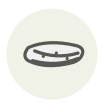

Kazunoko ✦
Kazunoko (œufs de hareng)
| Latin name | Clupea pallasii (roe) |
|---|---|
| Family | Roe & caviar |
| Origin | North Pacific herring grounds |
| Season (France) | December – January |
| Flavour | Briny · Umami · Marine · Mild |
| Typical price (France) | 60–120 €/kg |
What it is
The name reads as child of number: one sac holds tens of thousands of eggs, which is why kazunoko sits in the New Year osechi box as a wish for descendants. It is bought as much for its sound as its taste — the eggs stay bound together in the sac and crack between the teeth instead of bursting.
In the kitchen
Desalt it in a light 1 % brine, changed twice over a day, rather than plain water — fresh water pulls the salt out too fast and leaves a bitter edge. Then marinate a full day in dashi with soy and mirin.
Goes with
Katsuobushi Soy sauce Kombu Hon-mirin Junmai sake Daikon
Same species
Matjes herring Smoked herring Herring Herring milt
In season alongside
Tiger pufferfish (torafugu) Konowata Kuchiko (dried sea cucumber ovaries) Mussel Oyster Periwinkle
Something wrong here, or missing? Tell us